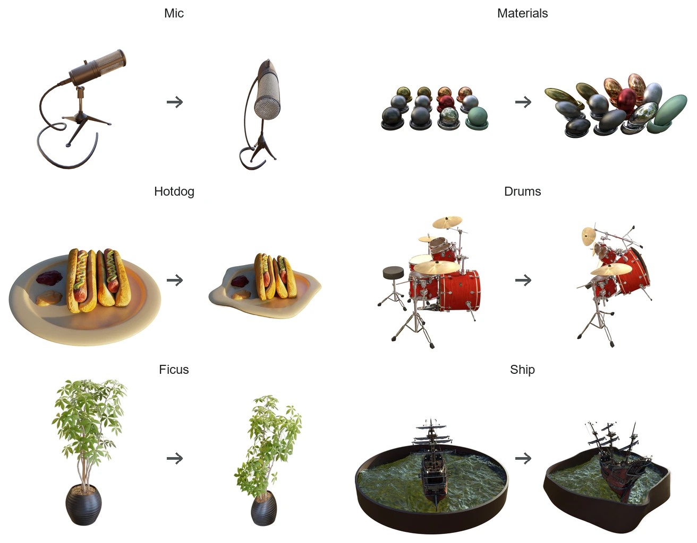

SoftGS: A Structured Gaussian Representation for Controllable Non-Rigid Editing
SoftGS edits Gaussian scenes from a sparse set of 3D control pairs. A smooth deformation meets feasible targets exactly and updates each Gaussian's position, shape, and view-dependent appearance together. The same source operator can be reused for new target positions.